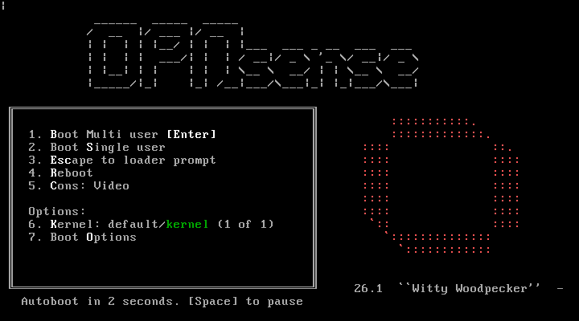
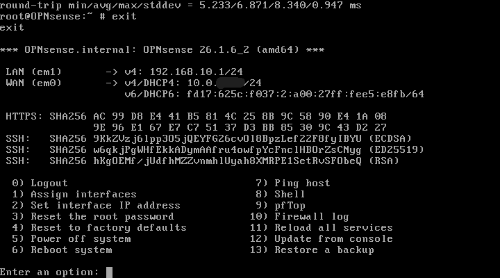
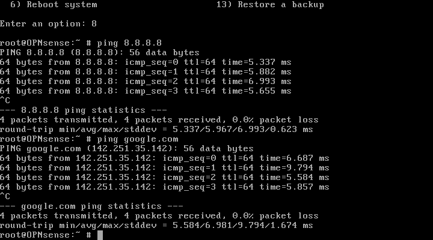

Lab Screenshots and Description

OPNSense Firewall Terminal Startup
Installed OPNSense Firewall OS into Virtualbox. Terminal started up for firwall configuration.

WAN Configuration
Configured WAN and LAN in terminal. Statically assigned LAN IP address as the gateway to proper VLAN (192.168.10.1). WAN IP dynamically assigned to NAT adapter on VM (10.0.x.x).

Connectivity Confirmation
Confirmed successful LAN-to-WAN communication by pinging 8.8.8.8 and google.com, validating Internet connectivity and functional DNS resolution.

DHCP Server
Enabled DHCP and configured an address pool for internal clients.

Outbound NAT
Verified automatic outbound NAT allowing LAN systems to communicate with the internet.

Firewall Rules
Created firewall policies allowing LAN traffic while restricting unauthorized communication.